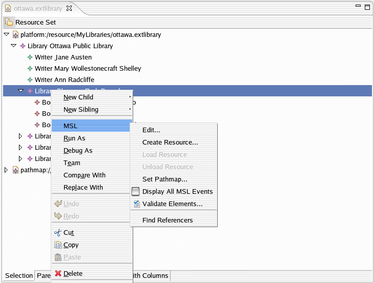

This example describes the usage of model management framework within the SDK. It demonstrates some of the model management capabilities (editing domain, validation, batched notification, semantic procedures etc.) applied to library models.
Please refer to the document Model Services Layer Examples Overview for reviewing the library meta-model used as the basis for demonstrating the capabilities in this example.
This example plug-in is named org.eclipse.gmf.examples.runtime.emf. This plugin registers
an editor MSL Library Model Editor to manage the library models. The library models can be opened using the
defualt library editor or this editor. The MSL Library Model Editor demonstrates the integrated capabilities
of the model management framework.
This plug-in contributes the MSL menu to the MSL library editor's main menu and context menu. The menu has the following actions:
MUndoInterval)URIConverterIn addition to the above mentioned actions, the editor also has actions to add books and writers. They are
NewChild->Books and NewChild->Writers. These actions allow creation of multiple books and writers respectively.
This capability demonstrates the grouped changes to the model within an MUndoInterval. The semantic procedure
implemented in this example ensures that unique names are assigned to the books and writers. The editor also has
actions to Undo, Redo and Delete changes to the model.
Please refer to the tutorial Model Management Tutorial for reviewing the code samples within this example
Refer to this example if you need: